Domality — understand your home network at a glance. (2018)
A mobile app that turns a home Wi-Fi network into one clear score, with speed, hardware and firmware explained in plain language.
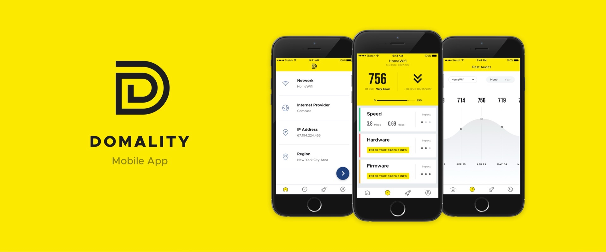
Overview
Domality is an app designed to help users understand each of the elements of their wireless network that contribute to its speed and security.
With a growing number of devices brought onto the networks from smart devices, phones, speakers and more, it is vital to keep your router updated and your devices patched.
Domality will provide you with information on the latest fixes for your home and a network score that shows ways to optimise everything from a quick glance.
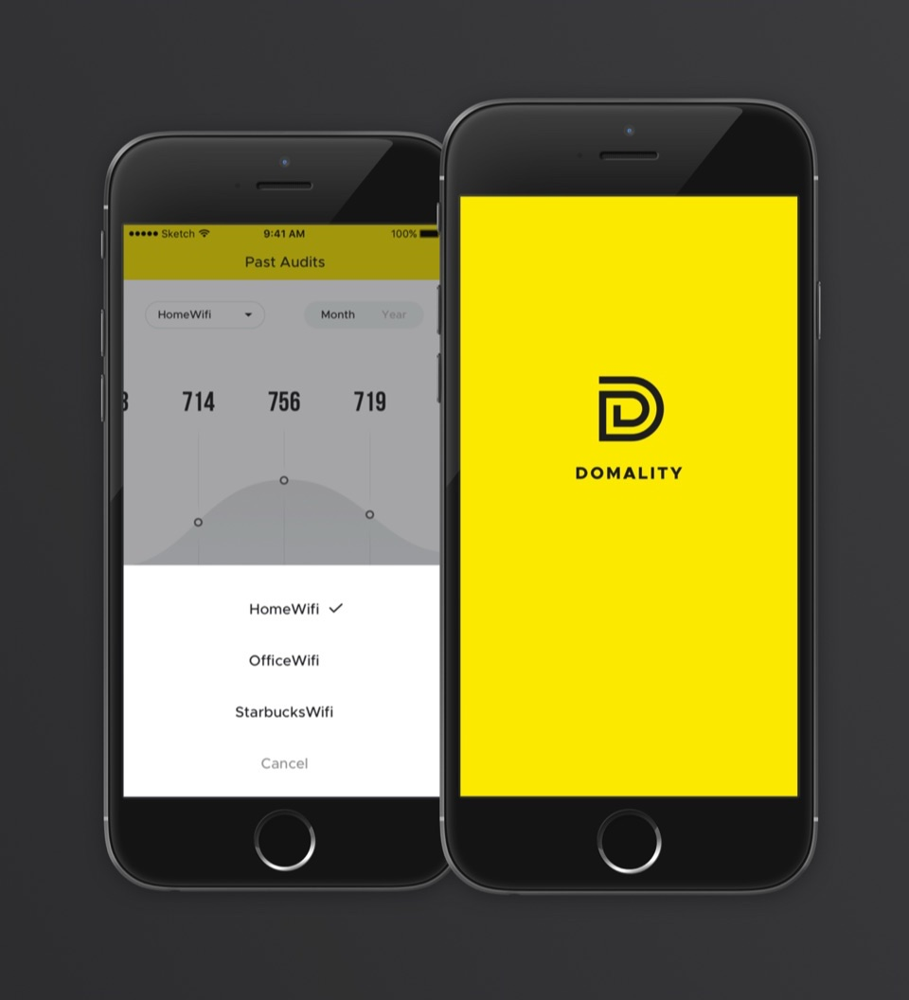
The concept
Aimed at different types of users who don’t have a rich technical background, the Domality app should be easily understood and used from day one.
By keeping flows and application sections clean and simple, users are able to explore and read displayed data quickly, in order to take further necessary actions.
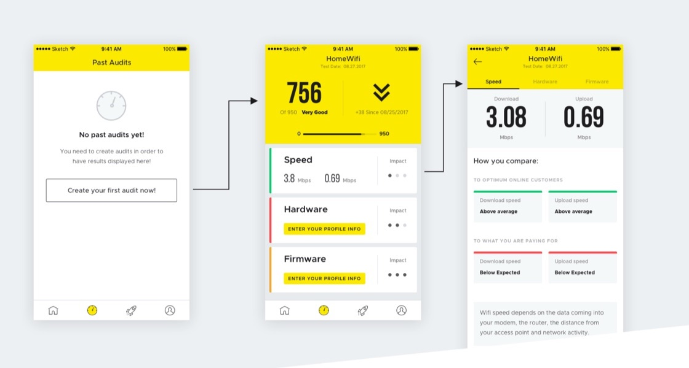
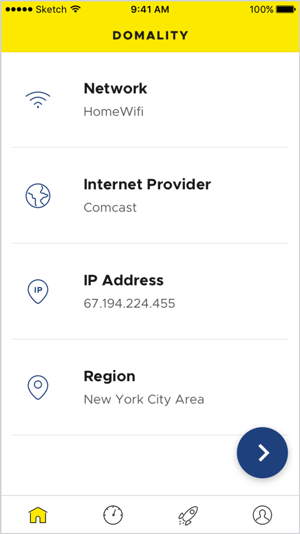
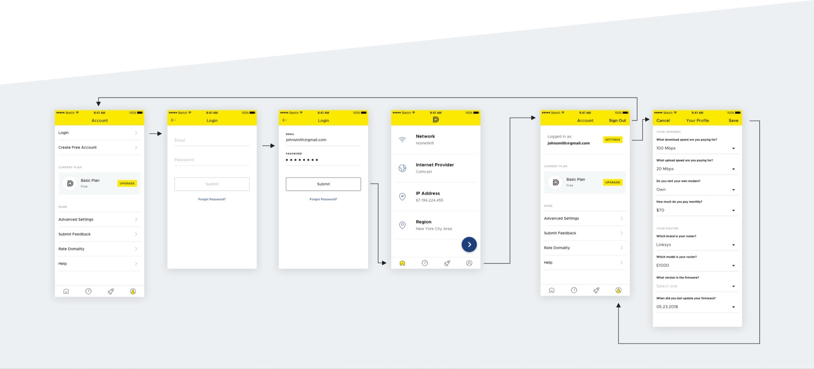
Design
Using clean typography, a yellow primary colour and white space, users can focus on actions and displayed data.
To further improve the experience, accented elements and colour coding are added for specific actions and readings.
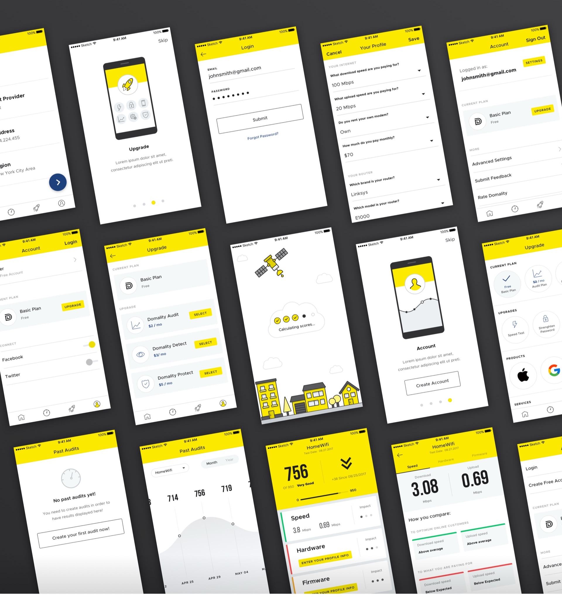
Identity
The main goal was to present Domality as stable, simple and powerful. Building the logo on a grid and closing up the stylised “D” from circles and rectangles helped achieve that.
Combining black and bright yellow in the logo and across the product strengthens the sense of strength and stability even more.
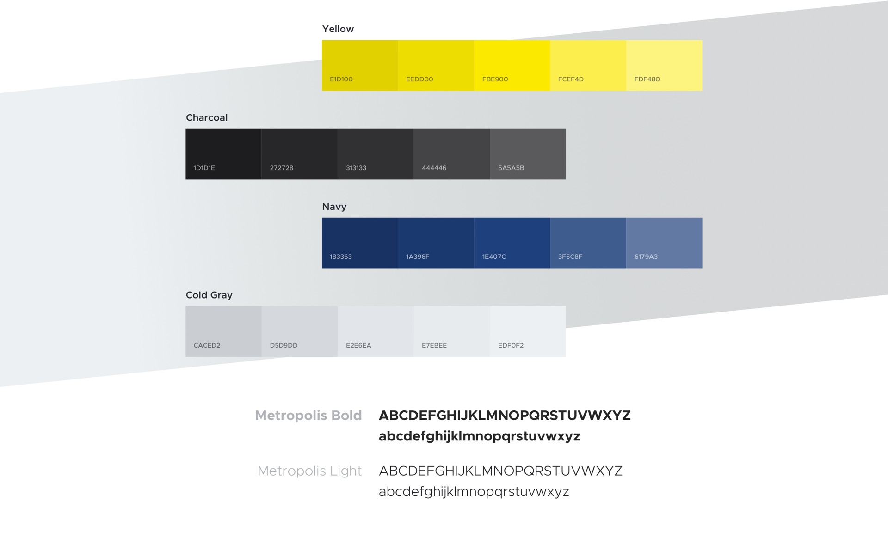
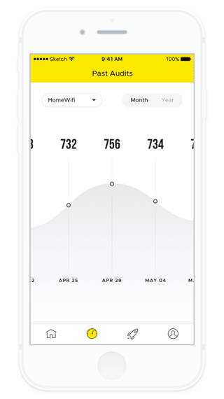
Illustrations
Adding a bit of fun and simplicity to the interface components helps people understand flows better while using the product.
Since the app mostly contains graphs and values, illustrations bring some delight into the layout and improve the experience.
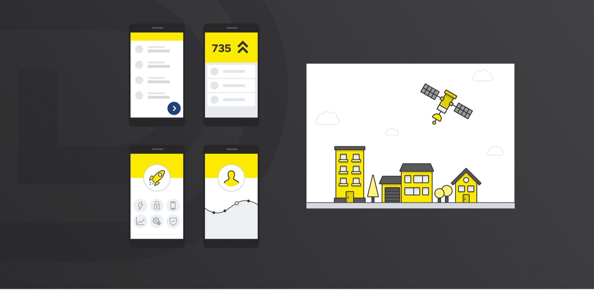
Interaction
The product has to display information clearly as people interact with it.
Details like transitions between screens, or showing which point of the loading process you’re at, bring the app closer to the user and make moving from one section to another more interesting and easier to follow.
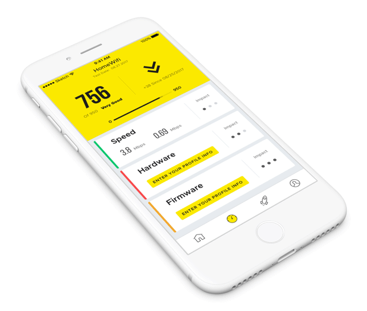
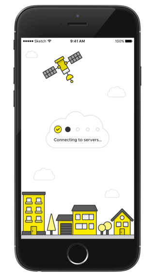